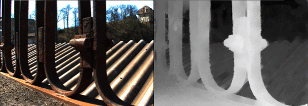

Estimating depth from light field images for photographic editing require high accuracy, view consistency, and fast processing. We present an efficient and accurate method based on finding sparse depth and occlusion edges, then diffusing these edges into smooth depth regions.
This is described in two papers: the first estimates depth for the central light field view, and the second reprojects this depth and completes missing areas through edge-guided inpainting.
Using reconstructed 4D depth for light field editing.
Edge-aware Bi-directional Diffusion for Dense Depth Estimation from Light Fields
arXiv 2021
Light field editing requires high-accuracy depth and occlusion edges.
Middle: Incorrect depth or occlusion edges make inserted content appear with artifacts and with overhanging regions.
Right: The accuracy of our depth edges allows easier occlusion handling when editing light fields. The inset shows our disparity map.
Abstract
We present an algorithm to estimate fast and accurate depth maps from light fields via a sparse set of depth edges and gradients. Our proposed approach is based around the idea that true depth edges are more sensitive than texture edges to local constraints, and so they can be reliably disambiguated through a bidirectional diffusion process. First, we use epipolar-plane images to estimate sub-pixel disparity at a sparse set of pixels. To find sparse points efficiently, we propose an entropy-based refinement approach to a line estimate from a limited set of oriented filter banks. Next, to estimate the diffusion direction away from sparse points, we optimize constraints at these points via our bidirectional diffusion method. This resolves the ambiguity of which surface the edge belongs to and reliably separates depth from texture edges, allowing us to diffuse the sparse set in a depth-edge and occlusion-aware manner to obtain accurate dense depth maps.
BibTex Citation
@misc{khan2021edgeaware,
title={Edge-aware Bidirectional Diffusion for Dense Depth Estimation from Light Fields},
author={Numair Khan and Min H. Kim and James Tompkin},
year={2021},
eprint={2107.02967},
archivePrefix={arXiv},
primaryClass={cs.CV}
}
View-consistent 4D Light Field Depth Estimation
BMVC 2020
Abstract
We propose a method to compute depth maps for every sub-aperture image in a lightfield in a view consistent way.
Previous light field depth estimation methods typically estimate a depth map only for the central sub-aperture view, and struggle with view consistent estimation.
Our method precisely defines depth edges via EPIs, then we diffus ethese edges spatially within the central view.
These depth estimates are then propagated to all other views in an occlusion-aware way.
Finally, disoccluded regions are completed by diffusion in EPI space.
Our method runs efficiently with respect to both other classical and deep learning-based approaches,
and achieves competitive quantitative metrics and qualitative performance on both synthetic and real-world light fields.
BibTex Citation
@article{khan2020vclfd,
title={View-consistent 4D Light Field Depth Estimation},
author={Numair Khan and Min H. Kim and James Tompkin},
journal={British Machine Vision Conference},
year={2020},
Our method works with both real and synthetic datasets, and a range of baselines:

Acknowledgements
Numair Khan thanks an Andy van Dam PhD Fellowship, James Tompkin thanks a gift from Cognex, and Min H. Kim thanks Korea NRF grant (2019R1A2C3007229).
"Edge-aware Bi-directional Diffusion for Dense Depth Estimation from Light Fields" was initially published as a tech report by Brown University; available here.
BibTex Citation
@techreport(khan2020falfd,
title={Fast and Accurate {4D} Light Field Depth Estimation},
author={Numair Khan and Min H. Kim and James Tompkin},
institution={Brown University},
number={CS-20-01},
month={August},